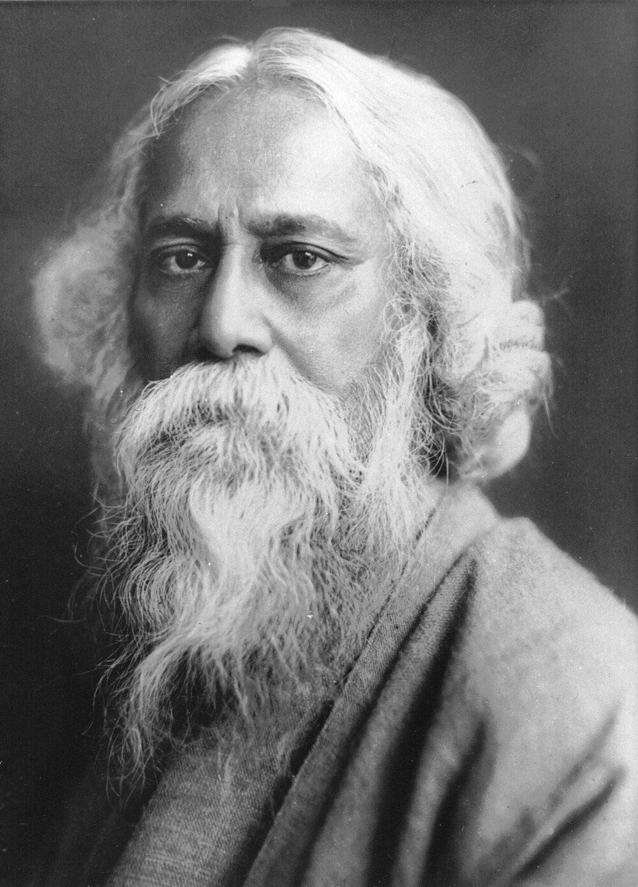

Chapter 11: Literatures of North, East and West India¶
nija bhāṣā unnati ahai, saba unnati ko mūla |
binu nija bhāṣā jñāna ke, miṭata na hiya ko sūla ||
Progress in one’s own language is the root of all progress; without knowledge of one’s own language the ache of the heart is not removed.
— Bhāratendu Hariścandra (wording varies slightly between printings)
11.1 Introduction¶
The modern Indo-Aryan languages emerged from the Prakrits and Apabhraṃśa in the late first and early second millennium CE. Their literatures took shape between about the tenth and sixteenth centuries, in a world in which Sanskrit and, after the thirteenth century, Persian were the languages of high culture and administration. Devotional poetry (Chapter 9) was one major source of the new literatures; others were court poetry, heroic ballads, Sufi romances, and the retelling of the epics and Purāṇas. This chapter surveys Hindi, Bengali, Marathi, Assamese, Odia, Gujarati, Punjabi, Kashmiri, Sindhi and Nepali, and several languages long counted under Hindi. Urdu, and the Persian literature of India from which Urdu poetry took its forms, are the subject of Chapter 12. The boundaries between these literatures were never firm. Poets and songs crossed them constantly — Vidyāpati’s Maithili songs were sung in Bengal, the Hindi songs of Kabīr and Nāmdev entered the Sikh scripture in the Punjab, and the Persian ghazal was imitated in almost every language — and the same stories, above all those of the Rāmāyaṇa, the Mahābhārata and the Bhāgavata Purāṇa, were retold in each. Sisir Kumar Das’s histories of Indian literature since 1800 cover the modern period across languages (Das 1991, 1995).
11.2 Hindi Literature¶
“Hindi” literature in the historical sense includes works in several related languages and dialects: Avadhi, Braj Bhāṣā, Rajasthani, Maithili and the Khaṛī Bolī of the Delhi region, which became the basis of both modern standard Hindi and Urdu. The standard periodisation, devised by Ramchandra Shukla in his history of Hindi literature (1929), is summarised in Table 11.1; Stuart McGregor’s history is the best account in English of the literature before 1800 (McGregor 1984).
| Period | Approximate dates | Character and principal figures |
|---|---|---|
| Ādikāl (early) | c. 1000–1320 | Heroic rāso poems of Rajput courts (much of the surviving text is later); Jain and Nāth poetry; Vidyāpati in Maithili (15th c.) |
| Bhaktikāl (devotional) | c. 1320–1640 | Kabīr, Ravidās, Jāyasī, Sūrdās, Tulsīdās, Mīrā |
| Rītikāl (mannerist) | c. 1640–1840 | Court poetry on poetics, heroines and love: Keśavdās, Bihārī, Bhūṣaṇ, Dev, Ghanānand |
| Ādhunik kāl (modern) | from c. 1840 | Bhāratendu, Premchand, the Chāyāvād poets, Agyeya, Muktibodh, Dalit writing |
11.2.1 Early and Devotional Literature¶
The Pṛthvīrāj Rāso, ascribed to Cand Bardāī, the bard of the twelfth-century king Pṛthvīrāj Cauhān, survives in versions of very different lengths; most of the text is now thought to date from the sixteenth century or later. Vidyāpati’s Maithili songs of Rādhā and Kṛṣṇa (early fifteenth century) were taken up by Bengali Vaiṣṇavas. The devotional poets of the Bhaktikāl are discussed in Chapter 9, and the Sufi romances of Avadhi, among them Jāyasī’s Padmāvat, in the next section. ʿAbd al-Raḥīm Khān-i Khānān (“Rahīm”, 1556–1627), a general of Akbar, wrote Braj and Avadhi dohās of practical wisdom that are still proverbial.
11.2.2 Rīti Poetry¶
The courtly poetry of the seventeenth and eighteenth centuries, much of it in Braj Bhāṣā, applied the Sanskrit theory of rasa, heroines and figures to Hindi verse. Keśavdās of Orchha (1555–1617) wrote the Rasikapriyā (1591) and Kavipriyā, handbooks of love poetry and poetics which also inspired a tradition of painting. Bihārī’s Satsaī (mid seventeenth century), about seven hundred dohās of extraordinary compression, is the best-loved work of the period; Bhūṣaṇ celebrated the Maratha king Śivājī in heroic verse; and Ghanānand wrote passionate poems of love outside the conventions. Allison Busch has shown that this literature, long dismissed by nationalist critics as decadent, was a sophisticated and influential court culture closely tied to the Mughal and Rajput courts (Busch 2011).
11.2.3 Modern Hindi¶
Bhāratendu Hariścandra (1850–1885) of Banaras, poet, dramatist, journalist and publisher, is regarded as the founder of modern Hindi literature; the couplet at the head of this chapter is one of his best known. Under Mahāvīr Prasād Dvivedī, editor of the journal Sarasvatī from 1903, Khaṛī Bolī replaced Braj as the language of Hindi poetry. Premchand (Dhanpat Rai, 1880–1936), who wrote first in Urdu and then in Hindi, created the modern Hindi short story and novel; his Godān (1936), the story of the peasant Horī crushed by debt and caste, is often called the greatest Hindi novel. The Chāyāvād (“shadowism”) poets of the 1920s and 1930s — Jayśaṅkar Prasād (Kāmāyanī), Sūryakānt Tripāṭhī “Nirālā”, Sumitrānandan Pant and Mahādevī Varmā — brought a romantic and mystical lyricism to Hindi, followed by the progressive and experimental movements of Agyeya, Gajanan Madhav Muktibodh and others, and later by Dalit writing such as Omprakash Valmiki’s autobiography Jūṭhan (1997).
11.2.4 Women Writers and the Hindi Short Story¶
After independence the Hindi short story became the leading form, in the Nayī Kahānī (“New Story”) movement of the 1950s, associated with Mohan Rakesh, Kamleshwar and Rajendra Yadav, which turned from the village to the uncertainties of urban middle-class life. Women writers played a major part in modern Hindi literature: Subhadrā Kumārī Cauhān’s ballad of the Rani of Jhansi became one of the best-known patriotic poems in Hindi; Mahādevī Varmā wrote, besides her poetry, essays on the condition of women collected as Śṛṅkhalā kī Kaṛiyāṃ (“Links of the Chain”); and Kṛṣṇā Sobtī, Mannū Bhaṇḍārī and Uṣā Priyaṃvadā wrote fiction that explored women’s desire, marriage and independence with a new frankness.
11.3 The Sufi Romances of Avadhi¶
Among the earliest and most ambitious works in any form of Hindi are the Sufi romances (premākhyān, “love stories”) composed in Avadhi between the late fourteenth and the seventeenth centuries by Muslim poets trained in Persian. Written in the Persian script for patrons at the courts of the Delhi and regional sultanates, they adapted Indian stories, landscapes and poetics to the Sufi understanding of love, and they form one of the great achievements of Indo-Islamic literature. Aditya Behl’s study, published after his death, reconstructs both the poems and the way their first audiences understood them (Behl 2012).
The series begins with Mullā Dāʾūd’s Cāndāyan (1379), dedicated to a minister of Fīrūz Shāh Tughluq, which retells the story of Lorik and Cāndā, a folk epic of the Ahir herders still sung in eastern Uttar Pradesh and Bihar. It continues with Qutban’s Mṛgāvatī (1503), written for the deposed Sharqī sultan of Jaunpur, in which a prince falls in love with a magical woman who can take the form of a doe and fly away, and must become a wandering yogi to find her again; and Manjhan’s Madhumālatī (1545), written for the Sūr sultan Islām Shāh, in which the lovers Manohar and Madhumālatī are brought together for a single night by fairies, separated, and reunited only after Madhumālatī has been turned into a bird by her mother’s curse. Between these two comes the most famous of all, Malik Muḥammad Jāyasī’s Padmāvat (1540), the romance of the Sinhalese princess Padmāvatī, King Ratansen of Chittor and the sultan ʿAlāʾ al-Dīn Khaljī, whose siege of Chittor ends the poem. Its heroine is a literary creation, and later attempts to treat the story as history have little basis. Later poets, such as Usmān in the Citrāvalī (1613), continued the form into the Mughal period.
The poems share a recognisable shape. Each opens with praise of God, the Prophet and his companions, the reigning sultan and the poet’s Sufi master, and then tells its story in stanzas of several caupāī couplets closed by a dohā, the form Tulsīdās later used for the Rāmcaritmānas. The hero sees or hears of a woman of unearthly beauty, is struck by love, abandons his kingdom in the guise of a yogi, and endures trials before union; a second wife often provides a counterweight, as Nāgamatī does in the Padmāvat, whose lament through the twelve months of the year (bārahmāsā) is one of the most celebrated passages of Hindi poetry. Behl showed that the poets built a Sufi poetics out of Indian materials: the beloved’s beauty is a manifestation of the divine, the hero’s ascetic quest is the seeker’s path, and the experience the poem offers its hearers is a “rasa of love” (prem-ras) understood in terms drawn both from Sanskrit aesthetics (Chapter 6) and from Sufi doctrine. Badāʾūnī records that a preacher in Delhi recited verses of the Cāndāyan from the pulpit and defended them as mystical truth, which suggests how such poems were heard in their own time.
The romances were also read simply as stories, copied in illustrated manuscripts, and adapted into other languages; Ālāol’s Bengali version of the Padmāvat is discussed in Section 12.13. Their mixture of Persian forms, Indian narrative and yogic imagery makes them a clear example of the shared literary culture of north India before the nineteenth-century separation of Hindi and Urdu.
11.4 Bengali Literature¶
11.4.1 Early and Medieval Bengali¶
Bengali literature begins with the Caryāpada, about fifty songs of Buddhist Tantric siddhas, probably composed between the tenth and twelfth centuries, discovered by Haraprasad Shastri in Nepal in 1907; Assamese and Odia literary historians also claim them. After a gap in the record, the earliest substantial work is Baḍu Caṇḍīdās’s Śrīkṛṣṇakīrtan, a cycle of songs and dialogues on Kṛṣṇa and Rādhā, earthy and often comic, whose single manuscript was found only in 1909; its date, between the fourteenth and the sixteenth century, is disputed. Kṛttivās’s Rāmāyaṇa (fifteenth century), freely adapted to Bengali village life and devotion, became the most widely read book in the language, and Kāśīrām Dās’s Mahābhārata (seventeenth century) did the same for the other epic. Vaiṣṇava devotion produced the lyric padāvalī and the biographies of Caitanya (Section 9.9).
The most distinctive genre of medieval Bengal was the maṅgalkāvya, the “poem of blessing” sung over several nights in honour of a deity whose worship it promotes. The poems of the snake-goddess Manasā, by Bijay Gupta, Bipradās Pipilāi (both late fifteenth century) and many others, tell how the merchant Cāndo, a devotee of Śiva, refuses to worship the goddess until she has killed his six sons and drowned his ships, and how his daughter-in-law Behulā floats down the river with the corpse of her husband Lakhindar and wins his life back from the gods by her dancing. The poems of Caṇḍī reached their height in Mukundarām Cakravartī’s Caṇḍīmaṅgal (late sixteenth century), whose stories of the hunter Kālaketu and the merchant Dhanapati are full of the details of village life, famine, taxation and trade, and it is widely regarded as the masterpiece of the genre (Sen 1960). The genre’s last great work, Bhāratcandra Rāy’s Annadāmaṅgal (1752–53), written for Rājā Kṛṣṇacandra of Nadia, frames the goddess’s story within a court poem of wit and polish and includes the risqué romance of Vidyā and Sundar, a favourite of the Calcutta stage a century later. Bhāratcandra’s contemporary Rāmprasād Sen (eighteenth century) composed songs to the goddess Kālī in which the devotee speaks to her as a child to a capricious mother, scolding, pleading and joking; his śyāmā-saṅgīt are still sung across Bengal (McLean 1998).
Muslim poets wrote much of this literature too. At the court of Arakan in present-day Myanmar, Daulat Qāzī and Ālāol (seventeenth century) adapted Hindi and Persian romances into Bengali (Section 12.13), and Muslim poets elsewhere in Bengal wrote romances, ballads and songs of the Sufi saints. The songs of the Bāuls, wandering mystic singers, among them Lālan Fakir (d. 1890), later inspired Tagore, and the improvised poetry contests of the kabigān entertained Calcutta audiences in the early nineteenth century. Sudipta Kaviraj has described how the nineteenth century rewrote this history, making the Sanskritised prose of Calcutta the measure of “Bengali literature” and pushing much of the older and popular literature to its margins (Kaviraj 2003).
11.4.2 The Nineteenth Century¶
The nineteenth century transformed Bengali literature. Rammohun Roy and Īśvarcandra Vidyāsāgar created modern Bengali prose; Michael Madhusūdan Datta’s Meghnādbadh Kābya (1861) introduced blank verse and recast the Rāmāyaṇa with the demon Meghnād as tragic hero; and Bankimcandra Caṭṭopādhyāy (1838–1894) created the Bengali novel with Durgeśnandinī (1865), Kapālkuṇḍalā and Ānandamaṭh (1882), which contains the song Vande Mātaram.
11.4.3 Rabindranath Tagore¶
Rabindranath Tagore (1861–1941; Figure 11.1) dominated Bengali literature for half a century. His range is unrivalled: some two thousand songs, among them the national anthems of India (Jana Gaṇa Mana) and Bangladesh (Āmār Sonār Bāṃlā); poetry spanning six decades; novels, short stories, plays, essays and, late in life, paintings (Table 11.2). He received the Nobel Prize in Literature in 1913, the first awarded to a writer from outside Europe, largely on the strength of Gitanjali, his own English prose renderings of his Bengali songs, introduced by W. B. Yeats. His fame in the West faded after the 1920s, partly because the English versions gave a limited idea of his Bengali poetry. He founded a school at Śāntiniketan in 1901, which became the university of Visva-Bharati in 1921, and his critique of aggressive nationalism, in lectures of 1916–17 and in the novel Ghare Bāire, set him apart from many contemporaries.


| Genre | Works | Remarks |
|---|---|---|
| Poetry | Mānasī, Sonār Tarī, Gītāñjali, Balākā | English Gitanjali (1912) |
| Novels | Gorā, Ghare Bāire, Śeṣer Kabitā | Nationalism, identity, modern love |
| Short stories | Galpaguccha | Founded the Bengali short story |
| Drama | Ḍākghar, Raktakarabī | Symbolic and allegorical plays |
| Songs | Rabīndrasaṅgīt (over 2,000) | Include the national anthems of India and Bangladesh |
11.4.4 Women Writers in Bengal¶
Bengal produced some of the earliest modern Indian writing by women. Besides Rāssundarī Devī’s autobiography (Chapter 13), Swarnakumari Devi, Tagore’s sister, was one of the first women novelists in Bengali, and Rokeya Sakhawat Hossain (1880–1932), a pioneer of Muslim women’s education, wrote Sultana’s Dream (1905), a short English fantasy of a utopian “Ladyland” in which men are kept in seclusion and women govern by science, as well as Bengali essays and satires against the seclusion of women. In the twentieth century Āśāpūrṇā Debī’s trilogy beginning with Prathama Pratiśruti (1964) traced the lives of three generations of women, and Mahāśvetā Devī’s fiction gave voice to tribal and Dalit women.
11.4.5 After Tagore¶
Twentieth-century Bengali literature includes the novels of Śaratcandra Caṭṭopādhyāy, Bibhūtibhūṣaṇ Bandyopādhyāy (Pather Pāñcālī, 1929), Tārāśaṅkar Bandyopādhyāy and Mānik Bandyopādhyāy; the “rebel poet” Kazi Nazrul Islam (1899–1976), now the national poet of Bangladesh; and the modernist poetry of Jībanānanda Dāś.
11.5 Marathi Literature¶
Marathi literature has two beginnings in the late thirteenth century. One is the Vārkarī poetry of Jñāneśvar and Nāmdev (Section 9.7). The other is the literature of the Mahānubhāvas, followers of the ascetic Cakradhar (d. c. 1274), who taught a devotion to Kṛṣṇa that rejected caste and the authority of the Veda. Their Līḷācaritra (c. 1278), compiled by his disciple Mhāimbhaṭ from the memories of his followers, is a collection of episodes from Cakradhar’s life told in a lively colloquial prose, the earliest extended prose in Marathi; the Sūtrapāṭh collects his sayings, and Mahānubhāva poets wrote narrative poems on Kṛṣṇa. Because the sect later kept its books in secret scripts, this literature was almost unknown outside it until the twentieth century. Christian Novetzke has argued that the Mahānubhāvas and the Vārkarīs together made Marathi a public language of everyday life, addressed to people whom Sanskrit learning excluded (Novetzke 2016).
The Vārkarī poets from Jñāneśvar to Tukārām gave Marathi its best-loved classics, and Rāmdās (1608–1681) wrote the Dāsbodh and Manāce Ślok. Beside them stood the learned “paṇḍit poets” of the seventeenth and eighteenth centuries, who wrote ornate Marathi verse on Purāṇic themes in Sanskrit metres: Vāman Paṇḍit, whose Yathārthadīpikā is a long commentary on the Bhagavadgītā; Raghunāth Paṇḍit, author of a polished Damayantīsvayaṃvar; Śrīdhar, whose retellings of the epics in the Rāmavijay and Pāṇḍavapratāp were read aloud in households across Maharashtra; and Moropant (1729–1794), who rendered the whole Mahābhārata into Marathi in the āryā metre and was famous for his verbal virtuosity. Mahīpati (1715–1790) wrote the lives of the saints in the Bhaktavijay and other works, which fixed the Vārkarī tradition’s memory of its poets. The Maratha state produced prose chronicles (bakhar) of its kings and battles, and its śāhīr poets composed heroic ballads (povāḍā) and the sensuous songs called lāvaṇī, which flourished at the Peshwa court of Pune in the late eighteenth century.
Modern Marathi literature was shaped by social reform and its controversies. Jotirao Phule’s Gulāmgirī (1873) attacked Brahmin domination; Hari Nārāyaṇ Āpṭe pioneered the social novel; Keśavsut brought a new personal voice to poetry; V. S. Khāṇḍekar’s Yayāti and the poetry of Kusumāgraj (V. V. Shirwadkar) won the Jnanpith Award. After the 1950s, inspired by Ambedkar, Marathi Dalit writers — Bāburāo Bāgul, Nāmdeo Ḍhasāḷ, Dayā Pavār (Balutā, 1978) and others — created the most influential Dalit literary movement in India.
Women’s voices in Marathi run from Janābāī and Bahiṇābāī (Chapter 9) through Tārābāī Shinde’s polemic (Chapter 13) and the autobiographies of Ramabai Ranade and Lakshmibai Tilak to Bahiṇābāī Chaudharī (1880–1951), an unlettered farm woman of Khandesh whose songs of field and household, composed orally in her dialect and written down by her son, were published after her death and are now classics of Marathi poetry. The Dalit women’s autobiographies of the late twentieth century, such as Shantabai Kamble’s and Urmila Pawar’s, continued this tradition of self-writing.
11.6 Assamese, Odia and Gujarati¶
11.6.1 Assamese¶
Assamese literature begins with Hema Sarasvatī’s Prahlādacarita and Mādhava Kandalī’s Rāmāyaṇa (fourteenth century), one of the earliest renderings of Vālmīki in a modern Indo-Aryan language. The Vaiṣṇava literature of Śaṅkaradeva and Mādhavadeva (Chapter 9) followed, and the Ahom kings sponsored chronicles (buraṇjī) in Assamese prose. Assamese developed a literary prose unusually early: Bhaṭṭadeva (1558–1638) rendered the Bhagavadgītā and the Bhāgavata Purāṇa into Assamese prose as the Kathā Gītā and Kathā Bhāgavata, and is remembered as the father of Assamese prose, while the buraṇjīs, written by court officials, recorded the politics of the Ahom state in a plain, factual style unusual in pre-modern Indian writing.
Under British rule Bengali was imposed as the language of courts and schools in Assam from 1836 until 1873, and the campaign to restore Assamese, supported by American Baptist missionaries who printed the first Assamese periodical, Aruṇodai (1846), became a foundation of modern Assamese identity. The journal Jonākī (1889), started by Assamese students in Calcutta — among them Candrakumār Āgarwālā, Lakṣmīnāth Bejbaruā and Hemcandra Goswāmī — launched a romantic movement in poetry and the short story. Bejbaruā, essayist, satirist and story-writer, is regarded as the chief maker of modern Assamese literature. Jyotiprasād Āgarwālā (1903–1951), playwright, poet and composer, made the first Assamese film, Joymoti (1935). In the later twentieth century Birendra Kumar Bhattacharya (Jnanpith Award 1979) wrote novels of the Naga hills and of the 1942 movement, and Indira Goswami (Mamoni Raisom Goswami, Jnanpith Award 2000) wrote fiction about widows in a Sattra household and about the lives of the poor, notably Dontāl Hātīr Uiye Khowā Haodā (“The Moth-Eaten Howdah of the Tusker”). The poet Nilmani Phookan also received the Jnanpith Award.
11.6.2 Odia¶
Sāraḷā Dāsa’s Mahābhārata (fifteenth century) is the first major Odia work and a free, localised retelling of the epic. The pañcasakhā poets, among them Jagannātha Dāsa, whose Odia Bhāgavata became a household text, followed in the sixteenth century; Upendra Bhañja (c. 1670–1740) wrote ornate court kāvya; and Bhīma Bhoi (nineteenth century), a poet from the Kondh community and a follower of the Mahimā Dharma, composed devotional songs that reject caste and image worship.
The rīti-like ornate poetry of the seventeenth and eighteenth centuries is one of the distinctive achievements of Odia. Dīnakṛṣṇa Dāsa’s Rasakallola retells the life of Kṛṣṇa in verses every line of which begins with the syllable ka; Upendra Bhañja’s long poems display every kind of verbal virtuosity, from double meanings to elaborate alliteration; Abhimanyu Sāmanta Siṃhāra’s Vidagdha Cintāmaṇi applies the classifications of Sanskrit poetics to the love of Rādhā and Kṛṣṇa; and Kavisūrya Baladeva Ratha (1789–1845) composed lyrical campū songs that are still sung in the Odissi musical tradition. Devotion to Jagannātha of Purī inspired poets of every background, among them Salabega (seventeenth century), the son of a Mughal soldier, whose Odia bhajans to Jagannātha are sung at the Ratha Yātrā.
Modern Odia literature grew out of the movement to defend the language, which some Bengali scholars in the 1860s and 1870s had claimed was merely a dialect of Bengali. Rādhānātha Rāy (1848–1908) introduced narrative and descriptive poetry on European models; Gaṅgādhara Meher (1862–1924), a weaver by caste, wrote the narrative poem Tapasvinī on the exiled Sītā; and Phakīr Mohan Senāpati’s Chha Māṇa Āṭha Guṇṭha (1897–99), a satirical novel of rural exploitation, founded modern Odia fiction. In the twentieth century Gopīnāth Mohānti’s novels, including Paraja on the life of a tribal community, the poetry of Sachidananda Routray and Sitakant Mahapatra, and the fiction of Pratibha Ray, all recipients of the Jnanpith Award, made Odia one of the major modern literatures of India.
11.6.3 Gujarati¶
Gujarati literature grew out of the Apabhraṃśa of the Jain monks of the Caulukya kingdom, whose illustrations in Hemacandra’s grammar (Section 5.6) are among the earliest verses in a form close to the language. The first works usually counted as Gujarati are Jain rāsas, narrative and didactic poems meant to be sung, often in a circle dance, beginning with Śālibhadrasūri’s Bharateśvarabāhubalirāsa (1185), on the rivalry of the two sons of the first tīrthaṅkara. Jain monks also wrote phāgus, poems on the spring festival in which the season’s beauty tempts an ascetic, as in the fourteenth-century Sirithūlibhaddaphāgu on the monk Sthūlabhadra and the courtesan Kośā, and the anonymous Vasantavilāsa, a secular spring poem of great charm. Jain libraries preserved this literature together with much else (Section 5.3).
Narsinh Mehtā (fifteenth century), author of the hymn Vaiṣṇava jana to, which Gandhi made famous, is regarded as the first great Gujarati poet, and Mīrā’s songs (Section 9.8) circulated in Gujarati as well as in Rajasthani and Braj. The narrative ākhyān, a retelling of an episode from the epics or Purāṇas for public recitation, was taken up by Bhālaṇ in the fifteenth century and perfected by Premānand (late seventeenth century), a professional reciter who performed his poems while beating time on a copper pot; his Nalākhyān, Sudāmācaritra and Okhāharaṇ make the gods and heroes speak like Gujarati householders and are still among the best-loved works of the language. The satirist Akho (seventeenth century), a goldsmith, mocked ritual and false teachers in pithy stanzas; Śāmaḷ (eighteenth century) wrote verse tales of adventure for a mercantile audience; and Dayārām (1777–1853) composed the lyrical garbīs, songs to Kṛṣṇa for women’s circle dances, that close the pre-modern period. Sitamshu Yashaschandra’s essay traces this literature from Hemacandra to Gandhi (Yashaschandra 2003).
Modern Gujarati literature began with the reformist poetry and prose of Narmad (1833–1886) and Dalpatrām, and with Nandaśaṅkar Mehtā’s Karaṇ Ghelo (1866), the first Gujarati novel, on the last Vāghelā king. Govardhanrām Tripāṭhī’s four-volume Sarasvatīcandra (1887–1901) set the problems of a reforming society within a long romance; K. M. Munshi’s historical novels recreated the Caulukya kingdom; Gandhi’s autobiography Satyanā Prayogo (1925–29) transformed Gujarati prose (Section 11.14); and Jhaverchand Meghāṇī collected and retold the folk songs and ballads of Saurashtra. In the twentieth century the poets Umāśaṅkar Jośī and Rājendra Shāh and the novelist Pannālāl Paṭel, whose Mānavīnī Bhavāī (1947) is a novel of peasant life in famine, received the Jnanpith Award.
11.7 Punjabi and Kashmiri¶
Punjabi literature begins with the verses of Shaikh Farīd and the hymns of Guru Nānak and the Sikh Gurus in the Ādi Granth (Chapter 9). The Sufi poets Shāh Ḥusain, Sulṭān Bāhū and Bulleh Shāh, and the qissā romances — above all Wāris Shāh’s Hīr (1766), the tragic love story of Hīr and Rāṅjhā — form its classical core. In the twentieth century Bhāī Vīr Singh, Puran Singh and Amritā Prītam were among its major voices; Amritā Prītam’s lament on the Partition, addressed to Wāris Shāh, became one of the most famous Punjabi poems.
Kashmiri literature begins with the vākhs of Lal Ded (Chapter 9) and the verses (shrukh) of Nund Ṛṣi (Shaikh Nūr ud-Dīn, 1377–1438), whose shrine at Chrār-i Sharīf remains a centre of Kashmiri devotion. Both wrote in a language that had no prestige at court, where Sanskrit and then Persian were the languages of learning, and both were preserved largely in oral tradition. Ḥabba Khātūn (sixteenth century), traditionally the wife of Yūsuf Shāh Chak, the last independent king of Kashmir, who was exiled after the Mughal conquest of 1586, is remembered for love lyrics of longing and separation sung to this day; in the eighteenth century Arnimāl, abandoned by her husband, continued this tradition of the woman’s lament (lol).
In the eighteenth and nineteenth centuries Kashmiri poets adapted Persian forms and stories. Maḥmūd Gāmī (1765–1855) retold Persian romances such as Yūsuf and Zulaykhā as Kashmiri masnavīs; Rasūl Mīr wrote ghazals of romantic love; and the Hindu poet Parmānand (1791–1879) composed long devotional poems on the life of Kṛṣṇa. The twentieth century brought Ghulām Aḥmad Mahjūr (1887–1952), poet of nature and of Kashmiri national feeling; ʿAbd ul-Aḥad Āzād (1903–1948), whose poetry of revolt questioned religious authority; and Dīnanāth Nādim (1916–1988), who introduced free verse and wrote opera libretti in Kashmiri. Rahmān Rāhī became the first Kashmiri writer to receive the Jnanpith Award (2004). Kashmiri writing in recent decades has also had to bear witness to conflict and displacement, including the exodus of the Kashmiri Pandits in 1990.
11.8 Maithili, Rajasthani, Bhojpuri and Dogri¶
Several languages often counted, for administrative purposes, under the heading “Hindi” have literary histories of their own. Maithili, the language of Mithilā in north Bihar and the Nepal Tarai, has one of the earliest prose works in any modern Indo-Aryan language, Jyotirīśvara Ṭhākura’s Varṇaratnākara (early fourteenth century), a storehouse of set descriptions for storytellers. Vidyāpati’s songs (Chapter 9) made Maithili a language of lyric throughout eastern India, and in the seventeenth century Maithili drama flourished at the Malla courts of the Kathmandu valley. In the twentieth century the satirist Harimohan Jhā and the poet Nāgārjun (Yātrī), who also wrote in Hindi, renewed the literature, and Maithili was added to the Eighth Schedule of the Constitution in 2003.
Rajasthani literature has two registers. The bardic poetry of the Cāraṇ and Bhāṭ communities, in a literary idiom called Ḍiṅgal, celebrated the battles and genealogies of the Rajput clans, while Piṅgal, close to Braj Bhāṣā, served for devotional and courtly verse. The folk romance of Ḍholā and Mārū, sung in many versions, and Pṛthvīrāj Rāṭhauṛ’s Veli Krisan Rukmaṇī rī (late sixteenth century), an ornate poem on the marriage of Kṛṣṇa and Rukmiṇī, are among its classics, and Mīrā’s songs (Chapter 9) belong partly to this language. In modern times Vijaydān Dethā (1926–2013) retold Rajasthani folk tales in a literary prose; his story Duvidhā was filmed by Mani Kaul (1973).
Bhojpuri, spoken in western Bihar and eastern Uttar Pradesh and carried by indentured labourers to Mauritius, Fiji, Trinidad and Guyana, has a large oral literature of songs and ballads. Its best-known author, Bhikhārī Ṭhākur (1887–1971), a barber by caste, created the popular musical theatre known as bidesiyā, whose plays dramatise the sufferings of migrant workers and of the wives they left behind. Dogri, the language of the Jammu region, developed a modern literature in the twentieth century, of which the poet Padmā Sachdev (1940–2020) is the best-known voice; it too was added to the Eighth Schedule in 2003.
11.9 Sindhi and Nepali¶
Sindhi literature reached its classical height in the Shāh jo Risālo of Shāh ʿAbd al-Laṭīf (Chapter 9), whose poems retell the folk romances of Sindh — Sasuī and Punhūṅ, Sohṇī and Mehār, Ūmar and Mārūī — as allegories of the soul’s search for God, sung in musical modes (sur). Sachal Sarmast (1739–1829) wrote ecstatic Sufi poetry in Sindhi, Siraiki and Persian. After Partition, Sindhi writers in India, most of them Hindus displaced from Sindh, sustained a literature without a homeland, and Sindhi was added to the languages of the Indian Constitution in 1967.
Nepali, spoken in Nepal and in Sikkim, Darjeeling and other parts of India, has its classic in Bhānubhakta Āchārya’s Nepali Rāmāyaṇa (nineteenth century), which played a role in Nepali literature comparable to that of the regional Rāmāyaṇas elsewhere. Lakshmi Prasad Devkota and other modern poets made it a major literary language in the twentieth century.
11.10 Oral Epics¶
Beside the written epics and their regional retellings, every part of India has oral epics of its own, sung by professional bards and caste performers over several nights and transmitted almost entirely by memory. Their heroes are local: Rajput warriors, herdsmen, cultivators and the deified dead of particular castes and places. They are the subject of Volume 23 of this series; a few deserve mention here because they have been edited and translated as literature (Blackburn et al. 1989). The Ālhā, sung in the Hindi-speaking regions, above all in Bundelkhand and during the rains, tells of the brothers Ālhā and Ūdal of Mahoba and their wars with Pṛthvīrāj Cauhān; it is ascribed to a bard named Jagnik, but its versions are many and largely modern. The Rajasthani epic of Pābūjī, a Rāṭhauṛ hero who dies defending the cows he has sworn to protect, is performed by a priest-singer (bhopo) and his wife before a long painted cloth (paṛ) that serves as a portable temple and illustrates the story; John D. Smith’s edition and translation is a model study of such a tradition (Smith 1991). In Andhra, the epic of the heroes of Palnāḍu recalls a twelfth-century war between two branches of a ruling family, which Śrīnātha also treated in a literary poem (Section 10.3) (Roghair 1982); and in the Kongu region of Tamil Nadu the Aṇṇaṉmār Katai, the “story of the elder brothers”, tells of the twin heroes Poṉṉar and Caṅkar and their sister, and is still sung at their shrines (Beck 1982). These epics often share motifs with the Sanskrit epics — some present their heroes as incarnations of the Pāṇḍavas — but they speak for communities and regions that the written classics rarely represented.
11.11 Theatre in the Modern North¶
The nineteenth century saw the rise of a commercial theatre in the cities. The Parsi theatre companies of Bombay, performing in Urdu, Hindi and Gujarati, toured the subcontinent with spectacular productions of Persian romances, Shakespeare adaptations and Purāṇic stories, and shaped both Hindi–Urdu drama and, later, Indian cinema; Āghā Ḥashr Kāshmīrī was its most celebrated playwright. Bengali theatre developed in Calcutta from the 1850s, and Dīnabandhu Mitra’s Nīl Darpaṇ (1860), on the oppression of indigo cultivators, provoked a famous controversy. In Marathi, the saṅgīt nāṭak (musical drama) of the late nineteenth and early twentieth centuries was hugely popular. After independence, playwrights such as Vijay Tendulkar (Marathi), Badal Sircar (Bengali), Mohan Rakesh and Dharamvir Bharati (Hindi) and Habib Tanvir, who worked with folk performers of Chhattisgarh, created a modern Indian theatre in dialogue with both Western drama and Indian traditions.
11.12 Literature and Painting¶
From the sixteenth century onwards literature and painting were closely linked at the Mughal, Rajput and Pahari courts. Akbar’s workshop illustrated the Persian adventure romance Ḥamzanāma (Section 12.18) in some fourteen hundred large paintings (c. 1562–1577), as well as the Razmnāma and Persian classics. At the Rajput and hill courts painters illustrated the Bhāgavata Purāṇa, Jayadeva’s Gītagovinda, Keśavdās’s Rasikapriyā and Bihārī’s Satsaī; the series of the Gītagovinda painted at Kangra in the late eighteenth century is among the masterpieces of Indian art. The rāgamālā (“garland of musical modes”) paintings combined poetry, music and the classification of heroines in a single image, each mode personified in a scene accompanied by a verse. These paintings are often the best guide to how the texts discussed in this volume were imagined by their courtly audiences.
11.13 Language and Identity¶
The history of the North Indian literatures in the nineteenth and twentieth centuries cannot be separated from the politics of language. The colonial state’s choice of languages for administration and education, the spread of print in particular scripts, and the rise of religious and regional nationalisms turned questions of literary language into questions of identity. The Hindi–Urdu controversy, in which Hindi in the Devanāgarī script came to be associated with Hindus and Urdu in the Perso-Arabic script with Muslims, divided a shared literary culture; Bengali literary identity became central to the movements that led eventually to the creation of Bangladesh in 1971; and the reorganisation of Indian states on linguistic lines after 1956 made the regional literatures symbols of state identity. Writers responded in many ways — some embracing these identities, others, like Premchand, who wrote in both Hindi and Urdu, insisting on the common ground. These debates are part of the background of every modern literature discussed in this chapter.
11.14 Gandhi and Literary Prose¶
Mohandas Karamchand Gandhi (1869–1948) was not a literary writer in the usual sense, but his influence on the literatures of India was immense. His Gujarati prose — in his journals, his autobiography Satyanā Prayogo and his tract Hind Swarāj (1909) — set a model of plain, direct expression that transformed Gujarati style and was imitated in other languages. His campaigns inspired novels, poems and plays in every language, from Raja Rao’s Kanthapura to Premchand’s Raṅgabhūmi, and his emphasis on the village, the dignity of labour and the abolition of untouchability shaped the subjects of a generation of writers. His views were also contested by writers, above all by Ambedkar and later by Dalit authors, who rejected his defence of the caste order as reformed rather than abolished; the debate between Gandhi and Ambedkar remains a central reference point for modern Indian literature on caste.
Further Reading¶
-
McGregor (1984): Hindi literature from its beginnings to the nineteenth century.
-
Busch (2011): Hindi court poetry of the Mughal period.
-
Sen (1960), Kaviraj (2003) and McLean (1998): Bengali literature, its historiography, and Rāmprasād.
-
Novetzke (2016): early Marathi literature and its public.
-
Yashaschandra (2003): Gujarati literary culture from Hemacandra to Gandhi.
-
Blackburn et al. (1989) and Smith (1991): the oral epics of India.
-
Behl (2012): the Sufi romances of Avadhi.
-
Das (1991) and Das (1995): the modern literatures across languages.